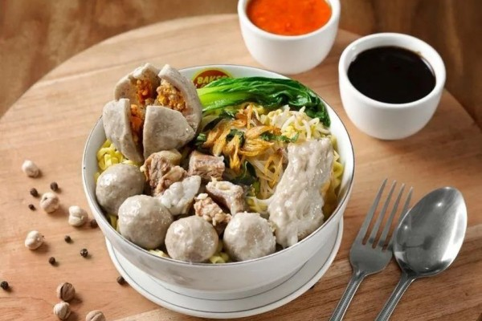
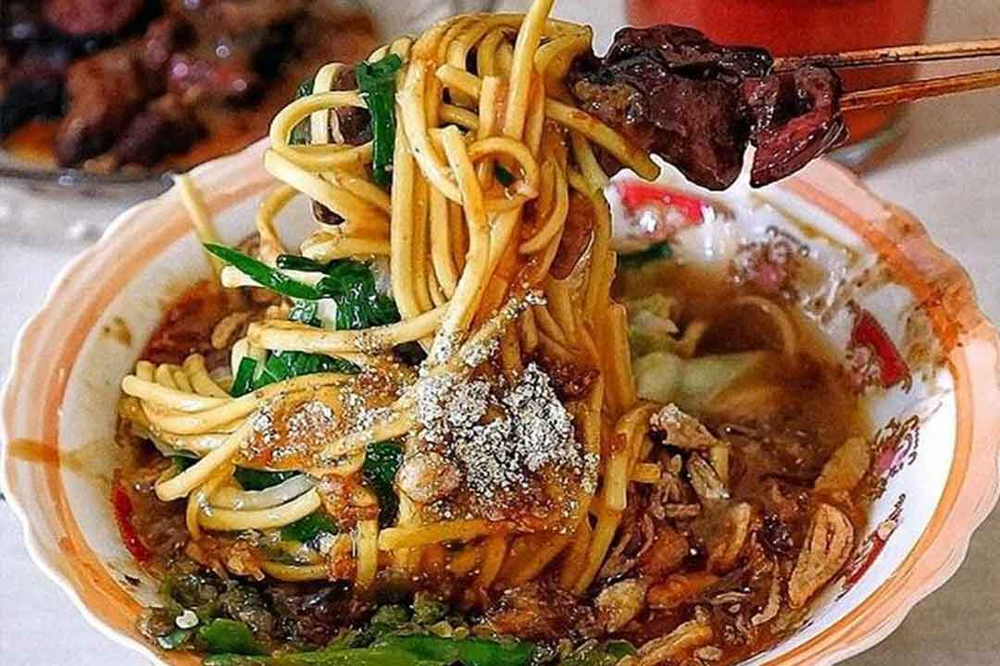

WARUNG MAKAN KAYYISA
AYO MAKAN DI WARUNG KAYYISA!!!
HARGANYA MURAH DIKANTONG
JANGANN LUPAA BELI YAA GUYSS
ENAK
LEZAT
BERGIZI
GURIH
PEDAS
FAVORIT
MIE AYAM

Mi ayam adalah hidangan khas Indonesia yang terbuat dari mi gandum yang dibumbui dengan potongan daging ayam.
Hidangan ini banyak terpengaruh dengan teknik penyajian kuliner yang digunakan dalam hidangan Tionghoa.
Di Indonesia, mi ayam merupakan hidangan Tionghoa-Indonesia yang sangat terkenal.Mi ayam sering dijual sebagai
hidangan jalanan oleh pedagang kaki lima dengan gerobak keliling sederhana, yang biasanya berkeliling di jalan-jalan
sekitar perumahan warga. Mi ayam juga merupakan hidangan populer yang disajikan di warung makan kecil pinggir jalan,
hingga rumah makan besar.
kembali ke atas
MIE AYAM SPECIAL

Mi basah atau gandum kuning direbus dalam air hingga teksturnya lunak dan dicampur dalam mangkuk berisi minyak goreng
dan bawang putih. Minyak akan melapisi mi sekaligus membantu memisahkan mi.Minyaknya bisa berupa lemak ayam,
atau minyak sayur. Daging ayam dipotong dadu dan dimasak dengan kecap dan bumbu lainnya termasuk bawang putih.
Daging ayam untuk mi ayam juga terkadang dimasak dengan jamur.Campuran ayam dan jamur yang dibumbui ditempatkan di atas mi,
dan di atasnya ditaburi daun bawang cincang (bawang merah). Mi ayam biasanya disajikan dengan kaldu ayam terpisah,
kubis cina rebus, dan sering kali disajikan dengan pangsit (pangsit) baik digoreng renyah atau dalam sup, dan kadang juga
ditambahkan bakso (bakso) dan juga bisa ditambahkan sawi rebus. Mi ayam versi Tiongkok mungkin menggunakan lemak babi atau minyak babi,
sedangkan mi ayam Indonesia yang lebih umum menggunakan lemak ayam halal atau minyak sayur.Bumbu tambahan mi ayam termasuk
tong cay (sayuran diawetkan asin), bawang goreng (bawang merah goreng),daun bawang (leek),kulit pangsit goreng, acar timun
caabai rawit, sambal, dan saus tomat.
kembali ke atas
BAKSO

Bakso(bahasa Hokkien: 肉酥; dialek Xiamen: bah so; bentuk tidak baku: baso) adalah jenis bola daging yang lazim ditemukan
pada masakan Indonesia.[4][5] Bakso umumnya dibuat dari campuran daging sapi giling dan tepung tapioka,tetapi ada juga
bakso yang terbuat dari daging ayam, babi, ikan, udang, kambing, bahkan daging kerbau.Dalam penyajiannya,bakso umumnya
disajikan panas-panas dengan kuah kaldu sapi bening, dicampur mi,bihun,taoge,tahu,terkadang telur lalu ditaburi bawang
goreng dan seledri.Bakso sangat populer dan dapat ditemukan di seluruh Indonesia, dari gerobak pedagang kaki lima hingga
restoran besar.Berbagai jenis bakso sekarang banyak ditawarkan dalam bentuk makanan beku yang dijual di pasar swalayan
ataupun mal-mal.Irisan bakso dapat juga dijadikan pelengkap jenis makanan lain seperti mi goreng, nasi goreng, sop atau
capcai.
kembali ke atas
BAKSO SAPI PEDAS

Bakso memiliki akar dari seni kuliner Tionghoa-Indonesia.Hal ini ditunjukkan dari istilah "Bakso" berasal dari kata Bak-So
dalam Bahasa Hokkien yang secara harfiah berarti "daging giling". Karena mayoritas penduduk Indonesia adalah muslim,maka
bakso lebih umum terbuat dari daging halal seperti daging sapi, ikan, dan ayam.Bakso merupakan campuran daging sapi giling
yang dicampur tepung tapioca dan dibentuk mirip bola-bola kecil ,biasanya menggunakan daging sapi tapi banyak juga yang
menggunakan daging ikan,ayam,udang,kerbau.Bakso disajikan dalam keadaan panas dengan kuah bening biasanya juga di
tambahkan mie dan bihun serta telur kemudian di taburi bawang goreng.
kembali ke atas
MIE ONGKLOK

Mi (atau bakmi) ongklok adalah mi rebus khas kota Wonosobo dan sekitarnya. Mi rebus ini dibuat dengan menggunakan kol,
potongan daun kucai,dan kuah kental berkanji yang disebut loh. Mi ini banyak dijajakan di berbagai warung,
rumah makan, maupun dijajakan keliling memakai gerobak di kota tersebut. Pendampingnya biasanya adalah sate sapi,
tempe kemul, serta keripik tahu.Sebelum disajikan mie ini diramu dengan sayuran kol segar dan potongan daun kucai.
Kol dan daun kucai merupakan sayuran khas Wonosobo. Kucai sendiri adalah daun yang terkenal sebagai penurun darah tinggi.
kembali ke atas
MIE ONGKLOK SATE
 Mie ini dinamai demikian dari nama alat masaknya, yakni ongklok. Ongklok adalah semacam keranjang kecil dari anyaman
bambu yang dipakai untuk membantu perebusan mi. Penggunaan alat bantu ini khas daerah setempat sehingga diberikanlah nama
mi rebus ini sesuai dengan alat tersebut.Kemudian setelah dicampur di sebuah gayung dari bambu, campuran mie dan sayuran
tadi dicelup-celupkan selama beberapa menit di air mendidih, dan cara inilah yang disebut diongklok. Mie yang secara
berulang-ulang dicelupkan di air mendidih.Dan cara pembuatan mie yang seperti ini hanya ada di Wonosobo.Hanya beberapa
menit, mie dan campuran sayuran tadi ditaruh di mangkuk dan diguyur kuah. Kuah mie ongklok inilah yang terkenal khas.
Kuahnya berasal dari pati yang dicampur gula jawa,ebi,serta rempah.Supaya rasanya lebih maknyus, mie ongklok diguyur juga
oleh bumbu kacang.“Agar lebih segar lagi, kami menambahkan merica dan bawang goreng,” kata Waluyo.Penyajian Mie Ongklok
khas Wonosobo sendiri juga tergolong cukup unik. Ada beberapa varian lauk yang disajikan bareng Mie Ongklok, diantaranya
sate sapi,tempe kemul,dan geblek atau semacam makanan dari singkong.Ketika menyentuh lidah, kuah mie ongklok ini sangat segar.
Kesegaran mie ongklok ini karena ada campuran ebi. Setelah dirasakan bersama lauknya, kelezatan pun bertambah.Sate Sapi
yang empuk dan tempe kemul yang renyah menyatu dengan rasa mie ongklok yang sedap dan segar.Hmmm rasanya sangat menggugah selera.
kembali ke atas
Mie ini dinamai demikian dari nama alat masaknya, yakni ongklok. Ongklok adalah semacam keranjang kecil dari anyaman
bambu yang dipakai untuk membantu perebusan mi. Penggunaan alat bantu ini khas daerah setempat sehingga diberikanlah nama
mi rebus ini sesuai dengan alat tersebut.Kemudian setelah dicampur di sebuah gayung dari bambu, campuran mie dan sayuran
tadi dicelup-celupkan selama beberapa menit di air mendidih, dan cara inilah yang disebut diongklok. Mie yang secara
berulang-ulang dicelupkan di air mendidih.Dan cara pembuatan mie yang seperti ini hanya ada di Wonosobo.Hanya beberapa
menit, mie dan campuran sayuran tadi ditaruh di mangkuk dan diguyur kuah. Kuah mie ongklok inilah yang terkenal khas.
Kuahnya berasal dari pati yang dicampur gula jawa,ebi,serta rempah.Supaya rasanya lebih maknyus, mie ongklok diguyur juga
oleh bumbu kacang.“Agar lebih segar lagi, kami menambahkan merica dan bawang goreng,” kata Waluyo.Penyajian Mie Ongklok
khas Wonosobo sendiri juga tergolong cukup unik. Ada beberapa varian lauk yang disajikan bareng Mie Ongklok, diantaranya
sate sapi,tempe kemul,dan geblek atau semacam makanan dari singkong.Ketika menyentuh lidah, kuah mie ongklok ini sangat segar.
Kesegaran mie ongklok ini karena ada campuran ebi. Setelah dirasakan bersama lauknya, kelezatan pun bertambah.Sate Sapi
yang empuk dan tempe kemul yang renyah menyatu dengan rasa mie ongklok yang sedap dan segar.Hmmm rasanya sangat menggugah selera.
kembali ke atas
Kolom Komentar
IKUTI KAMI DI MEDIA SOSIAL

Tinggalkan Komentar